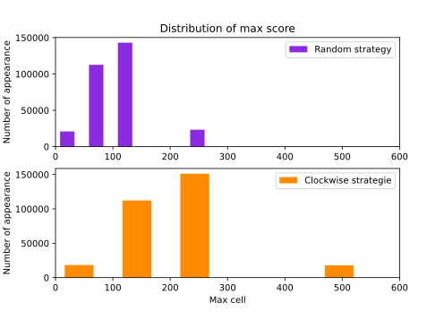

Project 2048
Installation
How to install the project 2048
The Game
2048 : The game
6561 : An alternative game
Strategies
Random
Clockwise
Opposite
Adjacent
Features
Distribution
Random vs Clockwise :
Opposite vs Adjacent :
Maximum cell
Random vs Clockwise :
Opposite vs Adjacent :
Project 2048
»
Distribution
View page source
Distribution
¶
Random vs Clockwise :
¶
Opposite vs Adjacent :
¶
Maximum cell
¶
Random vs Clockwise :
¶

Opposite vs Adjacent :
¶